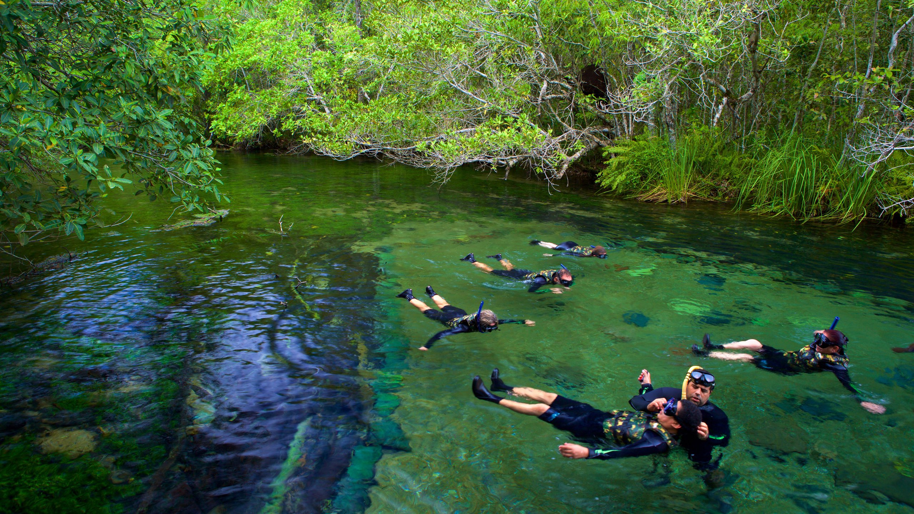

Mato Grosso do Sul é um estado localizado no Centro-Oeste do Brasil, conhecido por sua grande diversidade natural e belezas cênicas. A economia do estado é fortemente baseada na agropecuária, com destaque para a produção de carne bovina, soja e milho. O estado também abriga o famoso Pantanal sul-mato-grossense, uma das maiores áreas alagadas do mundo, que atrai turistas interessados em ecoturismo e observação de vida selvagem. A capital do estado é Campo Grande, que serve como um importante centro comercial e cultural da região. Além disso, o estado é conhecido pela rica cultura do interior, com festas típicas e culinária regional.
